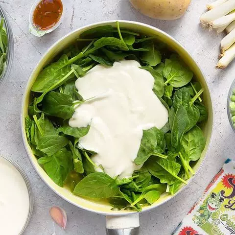

Nhập khẩu rau quả vượt mốc 1 tỷ USD, Thái Lan chiếm 60% thị phần

Wednesday, 27/03/2019 ❚ Đăng bởi: Ha Phan
Theo báo cáo từ Bộ NN&PTNT, giá trị xuất khẩu hàng rau quả tháng 9 năm 2017 ước đạt 294 triệu USD, đưa giá trị
xuất khẩu hàng rau quả 9 tháng đầu năm 2017 ước đạt 2,64 tỷ USD, tăng 44,2% so với cùng kỳ năm 2016.
Trung Quốc, Nhật Bản, Hoa Kỳ và Hàn Quốc là 4 thị trường nhập khẩu hàng đầu của hàng rau quả Việt Nam trong 8
tháng đầu năm 2017, chiếm 85,2% tổng giá trị xuất khẩu hàng rau quả. Trong 8 tháng đầu năm 2017, các thị trường
có giá trị xuất khẩu hàng rau quả tăng mạnh là Nhật Bản (64,6%), Tiểu Vương Quốc Ả Rập Thống Nhất (64,4%), Trung
Quốc (60,2%), Nga (41,9%), Hoa Kỳ (26,6%), Đài Loan (16,1%) và Hà Lan (9,4%).
Tỷ lệ tăng trưởng của một số thị trường xuất khẩu rau quả Việt Nam trong 8 tháng đầu năm (Đơn vị: %)
Ước giá trị nhập khẩu mặt hàng rau quả tháng 9 năm 2017 đạt 135 triệu USD, đưa giá trị nhập khẩu rau quả 9 tháng
đầu năm 2017 đạt 1,15 tỷ USD, tăng 78,2% so với cùng kỳ năm 2016. Trong đó, mặt hàng rau ước đạt 218 triệu USD,
tăng 30,1% so với cùng kỳ 2016 và mặt hàng quả đạt 914 triệu USD, tăng gần 2 lần so với cùng kỳ năm 2016.
Thị trường nhập khẩu rau quả lớn nhất trong 8 tháng đầu năm 2017 là thị trường Thái Lan (chiếm tới 60,7% thị
phần), tiếp đến là thị trường Trung Quốc (chiếm 15,7%). Trong 8 tháng đầu năm 2017 giá trị nhập khẩu rau quả ở
tất cả các thị trường đều tăng so với cùng kỳ năm 2016. Trong đó, thị trường có giá trị nhập khẩu rau quả tăng
nhiều nhất là Thái Lan (gấp hơn 2,8 lần), tiếp đến là thị trường Ấn Độ (gấp hơn 2,2 lần) và thị trường Hàn Quốc
(tăng 70,8%).
Tỷ lệ tăng trưởng của một số thị trường nhập khẩu rau quả vềViệt Nam trong 8 tháng đầu năm (Đơn vị: %)
Trong tháng 9/2017, trước cơn sốt giá sầu riêng tại các tỉnh Tây Nguyên, nhiều tiểu thương sẵn sàng đổ tiền vào
các nhà vườn để thu mua sầu riêng non lẫn chín. Tại huyện Krông Pắk (tỉnh Đắk Lắk), một số loại sầu riêng chất
lượng cao được thu mua với giá 54.000 đồng/kg – mức giá kỷ lục nhiều năm.
Đồng thời, giá dừa khô tại tỉnh Trà Vinh không ngừng tăng cao với mức thu mua tại vườn 150.000 đồng/chục (12
trái). Đây là mức giá dừa khô cao nhất trong vòng 6 năm qua, đem lại cho mỗi 1 ha vườn dừa thu nhập khoảng 15
triệu đồng/tháng.
Trong khi đó, thị trường rau củ tại Lâm Đồng tương đối ổn định chỉ có một số rau như cà chua, hoa lơ xanh và cải
bó xôi giảm nhẹ với mức giảm 2.000-3.000 đồng/kg so với đầu tháng.
Nhìn lại 9 tháng đầu năm, thị trường trái cây biến động thất thường do đặc tính thời vụ của từng loại trái cây.
Trong khi đó, thị trường rau củ bị ảnh hưởng của thời tiết đặc biệt những cơn bão gần đây đã làm nguồn cung giảm
khiến thị trường tăng mạnh vào tháng 7 và 8, tuy nhiên đến nay thị trường có dấu hiệu hồi phục.
Tin tức khác:
- Rau xanh tăng giá mạnh vì trời mưa, người dân nội thành lao đao
- Bí quyết bảo quản nho đen trong tủ lạnh tươi lâu hơn
- Những loại trái cây Nhật đắt như vàng ròng đổ bộ về Việt Nam
- Rau xanh tăng giá mạnh vì trời mưa, người dân nội thành lao đao
- 4 lý do bạn nên ăn dâu tây phòng tránh ung thư hiệu quả